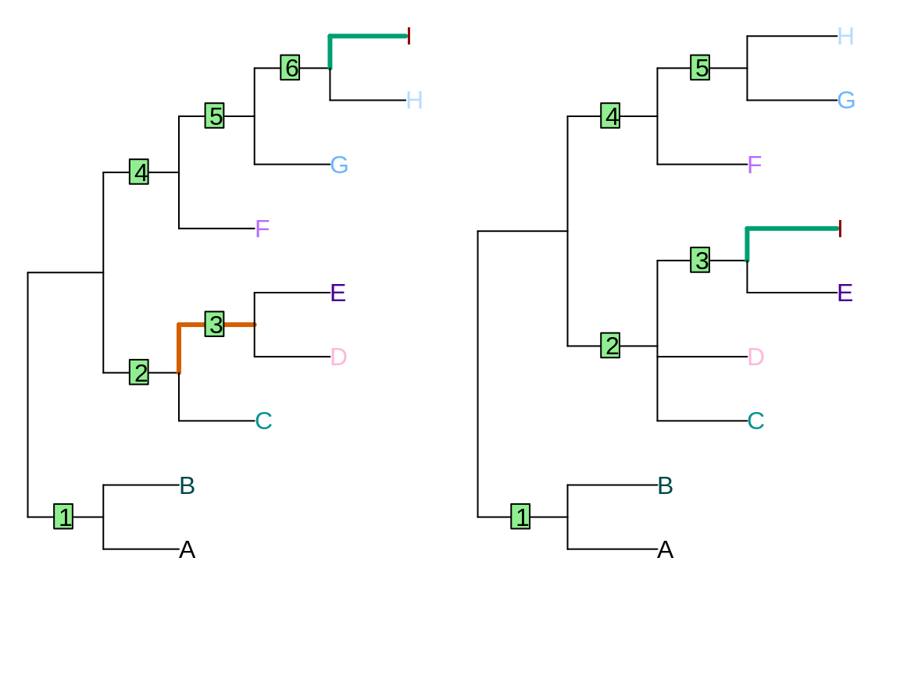
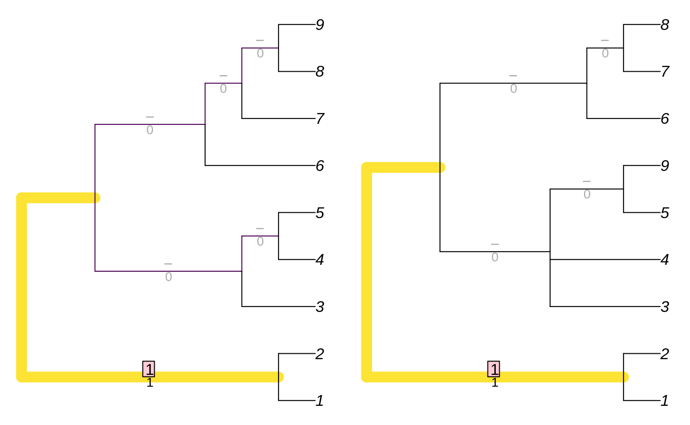

vignettes/tree-distances.Rmd
tree-distances.RmdThis file with give an overview of topological distance measures, and examples of how they can be calculated in R.
Examples are conducted using a pair of trees that differ in the position of one taxon, and the resolution of one clade:

The Robinson-Foulds distance (Robinson & Foulds, 1981), also termed the partitionwise symmetric difference, is a simple but problematic partitionwise measure.
Implementations include:
## Trees are not binary!## symmetric.difference
## 9treedist can only consider one pair of trees at a time, and calculates other distances at the same time, so is less suitable than:
## Trees are not binary!## [1] 9With RF.dist, tree1 and tree2 can be multiPhylo objects containing multiple trees, in which case each tree in tree1 will be compared with each tree in tree2.
It is possible to suppress the seemingly unnecessary warning message, and to normalize the output against the total number of partitions present:
## [1] 0.8181818The TreeDist package contains an inefficient implementation that allows matched partitions to be easily visualized:
## [1] 9
TreeDist also contains a function for the information-adjusted Robinson-Foulds distance:
## [1] 44.3723More details, and a discussion of the problems with the Robinson-Foulds metric, are provided in a separate article.
This package contains functions for various Generalized Robinson-Foulds distances, and allows user-specified pair similarity functions. See the separate article for details.
The quartet distance (???) can be calculated using the Quartet package, which uses the tqDist algorithm. The most suitable distance metric is typically the Quartet Divergence (Smith, 2019):
status <- Quartet::QuartetStatus(tree1, tree2)
Quartet::QuartetDivergence(status, similarity = FALSE)## d
## 0.3968254For more details, see the Quartet documentation
As with the Robinson-Foulds distance, this is calculated by
## Trees are not binary!## path.difference
## 9.69536or more efficiently by:
## [1] 9.69536The SPR distance is undefined on trees that contain polytomies.
sprdist compares two trees. SPR.dist can compute the pairwise distances between each tree in a multiPhylo object:
Note, however, that these functions only approximate the SPR distance.
Robinson, D. F., & Foulds, L. R. (1981). Comparison of phylogenetic trees. Mathematical Biosciences, 53(1-2), 131–147. doi:10.1016/0025-5564(81)90043-2
Smith, M. R. (2019). Information theoretic generalized robinson-foulds metrics for comparing phylogenetic trees. Forthcoming.